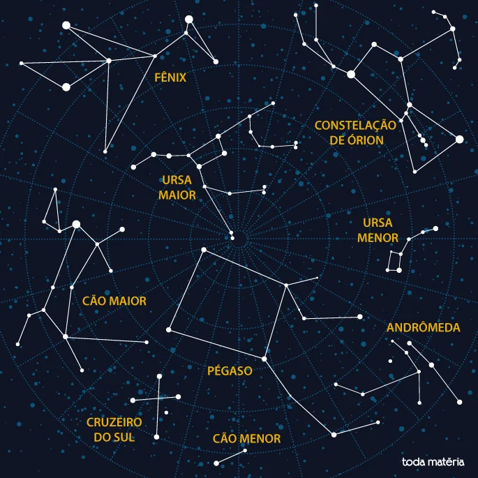

Constelações são agrupamentos de estrelas ligadas por linhas imaginárias usadas para representar objetos, animais, criaturas etc. As contelações também desempenham importante papel durante as navegações, pois eram usadas como orientação.
Estrelas são corpos celestes com luz própria. Elas são, na verdade, esferas gigantes compostas de gases que produzem reações nucleares de fusão, mas, graças à gravidade, podem se manter vivas (sem se explodir) por trilhões de anos. Assim, além de luz, elas emitem energia na forma de calor, que se propaga na forma de radiação pelo espaço.